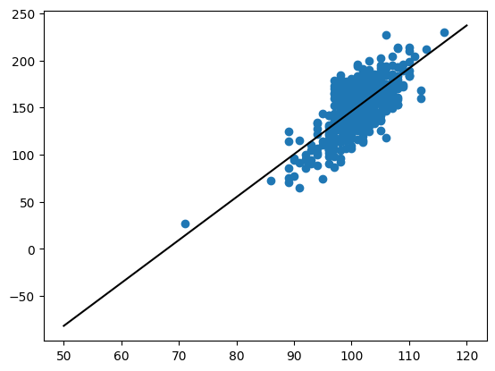
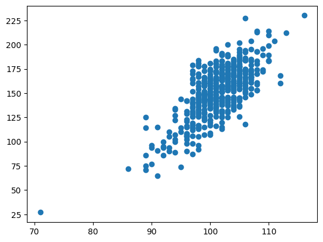

import numpy as np
import matplotlib.pyplot as plt
from scipy.optimize import minimize
import scipy.stats as st
import pandas as pddf = pd.read_csv("https://raw.githubusercontent.com/roualdes/data/refs/heads/master/donkeys.csv")
x = df["Weight"]
N = np.size(x)Mean
(1,) + (3,) + (5,)(1, 3, 5)def bootstrap(T, data, R = 1_000, conflevel = 0.95, **kwargs):
shp = np.shape(T(data, **kwargs))
rng = np.random.default_rng()
Ts = np.zeros((R,) + shp)
N = np.shape(data)[0]
a = (1 - conflevel) / 2
for r in range(R):
idx = rng.integers(N, size = N)
Ts[r] = T(data[idx], **kwargs)
return np.quantile(Ts, [a, 1 - a], axis = 0) bootstrap(np.mean, x)array([149.80675551, 154.35491728])bootstrap(np.median, x)array([152., 158.])bootstrap(np.std, x)array([24.52093543, 28.42205867])bootstrap(lambda z: np.sqrt(np.var(z)), x, conflevel = 0.98)array([24.20485749, 28.84863963])Linear regression prediction
def ll_regression(theta, data):
x = data["x"]
y = data["y"]
b0 = theta[0]
b1 = theta[1]
return np.sum( (y - (b0 + b1 * x)) ** 2)def ll_grad(theta, data):
x = data["x"]
y = data["y"]
b0 = theta[0]
b1 = theta[1]
lm = b0 + b1 * x
db0 = np.sum(y - lm)
db1 = np.sum( x * (y - lm) )
return -2 * np.array([db0, db1])rng = np.random.default_rng()
init = rng.normal(size = 2)
d = {
"x": df["Height"],
"y": df["Weight"]
}
o = minimize(ll_regression, init, jac = ll_grad, args = (d,))o.xarray([-309.30049353, 4.55262576])plt.scatter(df["Height"], df["Weight"])
y0 = np.sum(o.x * np.array([1, 50]))
y1 = np.sum(o.x * np.array([1, 120]))
plt.plot(np.array([50, 120]), np.array([y0, y1]), color = "black");
# work in progress; right idea, but needed new
# 1. function T
# 2. data structure
R = 1_000
def bootstrap2(T, data, R = 1_000, conflevel = 0.95):
ws = np.zeros(R)
rng = np.random.default_rng()
for r in range(R):
init = rng.normal(size = 2)
idx = rng.integers(N, size = N)
d = {
"x": df["Height"][idx],
"y": df["Weight"][idx]
}
o = minimize(ll_regression, init, jac = ll_grad, args = (d,))
ws[r] = np.sum(o.x * np.array([1, 80]))
return np.quantile(ws, [0.025, 0.975])np.sum(o.x * np.array([1, 80]))54.909567021646296# leaving this here so we can reproduce it
plt.scatter(df["Height"], df["Weight"])
for r in range(R):
y0 = np.sum(coefs[r] * np.array([1, 50]))
y1 = np.sum(coefs[r] * np.array([1, 120]))
plt.plot(np.array([50, 120]), np.array([y0, y1]), color = "black", alpha = 0.01);--------------------------------------------------------------------------- NameError Traceback (most recent call last) Cell In[15], line 4 2 plt.scatter(df["Height"], df["Weight"]) 3 for r in range(R): ----> 4 y0 = np.sum(coefs[r] * np.array([1, 50])) 5 y1 = np.sum(coefs[r] * np.array([1, 120])) 6 plt.plot(np.array([50, 120]), np.array([y0, y1]), color = "black", alpha = 0.01); NameError: name 'coefs' is not defined

a = np.array([[1,6], [2, 7], [3, 8], [4, 9], [5, 10]])
aa[[2, 1]]a[1: , 1]a[2:4, 1]np.sum(a, axis = 0) # collapse 0th axis, left with 2 columnsnp.sum(a, axis = 1) # collapse 1st axis, left with 5 rowsN = np.shape(df)[0]data = np.c_[df["Weight"], np.ones(N), df["Height"]]def ll_regression(theta, data):
X = data[:, 1:]
y = data[:, 0]
lm = np.sum(X * theta, axis = 1)
return np.sum( (y - lm) ** 2 )
def ll_grad(theta, data):
X = data[:, 1:]
height = X[:, 1]
y = data[:, 0]
lm = np.sum(X * theta, axis = 1)
db0 = np.sum(y - lm)
db1 = np.sum( height * (y - lm) )
return -2 * np.array([db0, db1])def ll_regression_prediction(data, **kwargs):
rng = np.random.default_rng()
init = rng.normal(size = np.shape(data[:, 1:])[1])
o = minimize(ll_regression, init, jac = ll_grad, args = (data,))
return np.sum(o.x * np.array(kwargs["xnew"]))bootstrap(ll_regression_prediction, data, xnew = [1, 80])array([46.64412514, 63.03909406])